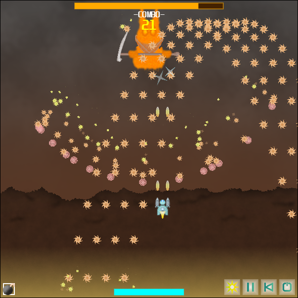
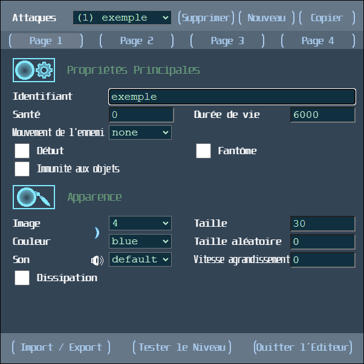
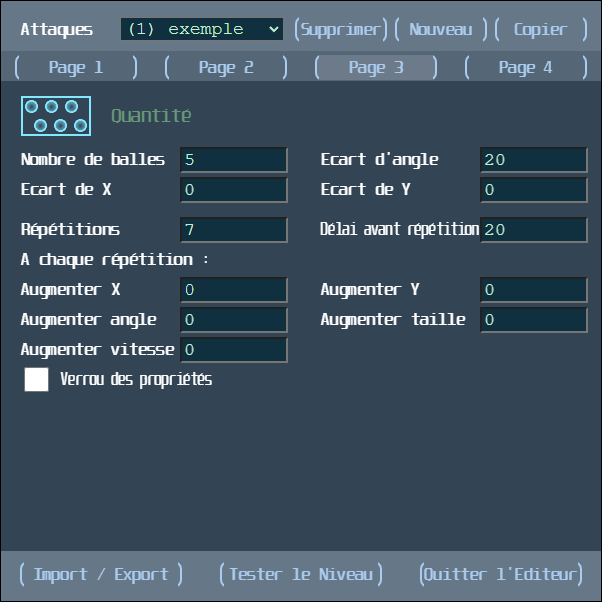
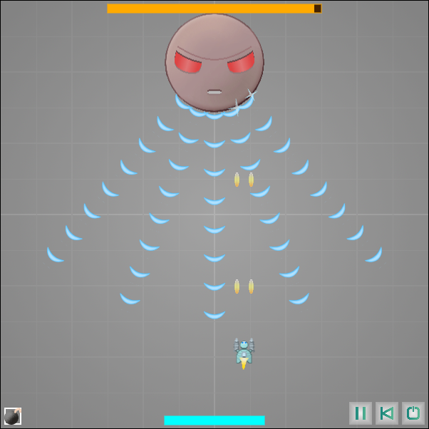

Bullet Hell Maker est un éditeur développé par Arnaud Roemer, sous le pseudonyme "ChacsGames" en 2020. Il s'agit d'un jeu vidéo d'action conçu pour les ordinateurs, dont les niveaux peuvent être créés par les joueurs, à l'aide d'une interface, puis partagés via un code JSON.
Le nom provient de Bullet Hell, un concept apparu dans les années 90 et rendu populaire au Japon par la série Touhou Project. Le joueur doit combattre un ou plusieurs ennemis qui ont chacun des attaques particulières, qui sont notamment constituées de dizaines, voire de centaines de projectiles apparaissant simultanément à l'écran. Il faut ainsi éviter ces attaques avec de l'observation, de la logique, de la mémoire, des réflexes.
Lorsqu'un niveau est joué, l'ennemi initiera ses attaques, déterminées par un code JSON. Pas besoin de connaître la programmation, l'éditeur permet de personnaliser les attaques : apparence, positionnement, mouvement, quantité de projectiles, enchaînement des attaques... Les possibilités sont infinies.
Illustration du "Bullet Hell", où l'esquive de l'attaque de l'ennemi est un vrai défi.
La première page de l'éditeur, avec une attaque en exemple.
Une autre page de l'éditeur, où la quantité de projectiles est définie.
Un test de l'exemple précédent, avec l'aperçu de l'attaque.